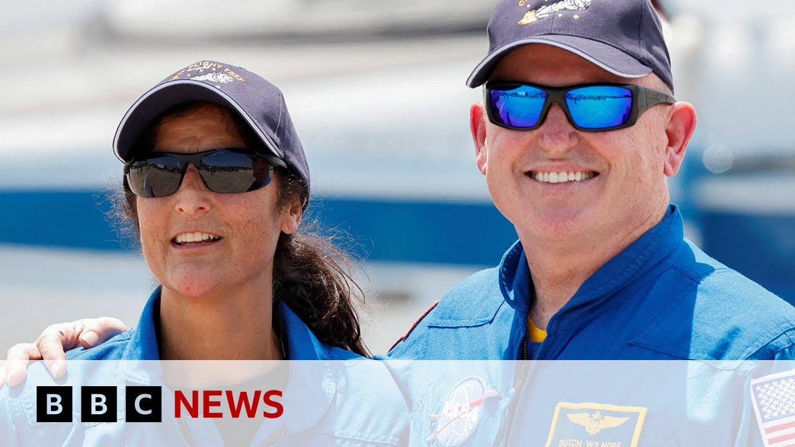

【宇航员在太空滞留九个月，曾不确定能否“安全返回” | BBC新闻】
Summary: Summary:
摘要： NASA astronauts Butch Wilmore and Sunny Williams spent 286 days in space due to technical issues on Boeing's Starliner, initially planned as an 8-day mission. They discuss physical challenges post-return, the critical docking moment at the ISS, and dismiss political claims of being "abandoned" in space.

⏱️ Estimated Reading Time: 8 min
You probably remember the NASA astronauts Butch Wilmore and Sunny Williams.
你可能还记得NASA宇航员Butch Wilmore和Sunny Williams。
They spent 286 days in space after their 8-day test flight on the Boeing Starliner experienced technical problems.
他们原计划8天的波音星际客机试飞因技术故障延长至286天。
Well, two months after their return to Earth, finally BBC's Reagan Morris spoke to them and looked back at their extraordinary mission.
返回地球两个月后，BBC记者Reagan Morris采访了他们，回顾这段非凡任务。
Release the uh now you you were meant to spend just over a week in space and it ended up being almost nine months and without almost 10 months no shortest a month.
“你们原计划在太空待一周，结果滞留近九个月——不，快十个月了。”
Yeah, almost 10 months. Almost 10 months.
“对，快十个月了。”
How I understand that can be quite hard on the human body.
“我理解这对身体是巨大考验。”
Uh how are you now that you've been back for two months? How are you feeling? Are you having any challenges?
“你们回来两个月了，感觉如何？有适应困难吗？”
Feeling pretty good.
“感觉不错。”
And you know, honestly, it was interesting that you said about the eight days because both of us like to work out and as soon as we got there, we had made arrangements with everybody that we were going to start working out right from the get-go.
“说实话，你提到8天很有趣——我们俩爱健身，一上去就安排立刻开始锻炼。”
And I think that really paid dividends in the end.
“这最终带来了回报。”
There's some trials and tribulations with coming back to gravity.
“重返重力环境有些折磨。”
It's a little bit painful that there's neurovestibular effects.
“神经前庭效应让人不适。”
There's, you know, just getting gravity back on your head and your back and all of that kind of stuff.
“比如头部和背部重新承受重力。”
Um is a little bit painful and you're working through all of those issues for a little while with our strength and conditioning coaches and uh it's it's been a little bit but I think both of us were better off because we started working out really right away because we were thinking we're only going to be up there for eight days and just kept it up for a good nine months.
“虽有些痛苦，但在体能教练帮助下适应了。我们因立刻锻炼而受益——原以为只待8天，却坚持了9个月。”
Yeah. If you think about Yeah. Yeah. Yeah. 10 months if you think about it.
“对，仔细想是10个月。”
I mean, you you work out on here on Earth and you fatigue your muscles and you need a day or two, sometimes three to recoup that muscle fatigue, right?
“在地球锻炼后肌肉需一两天恢复。”
And then go hit it again.
“然后继续训练。”
Well, up in space, you're not stressed at all. 23 hours a day, only that one hour you're working out.
“但在太空，每天23小时无压力，仅1小时锻炼。”
So, your body recuperates within a day.
“身体一天内就恢复。”
So, we worked out every single day.
“所以我们每天锻炼。”
I mean, squats and deadlifts every single day for almost 10 months.
“深蹲硬举坚持了近10个月。”
So, we're getting three years worth of workout in in 10 months if you think about it.
“相当于10个月完成3年训练量。”
and I came back literally stronger than I've ever been in my life.
“我回来时比以往都强壮。”
Can you take us back to the the moments when you were first approaching the International Space Station?
“能回忆接近国际空间站的时刻吗？”
I I' I've read a bit about it. It it sounds like it was really a a bit more terrifying than you let on the maybe or maybe that we understood in those moments when you're it was a bit maybe too dangerous to dock, too dangerous to go back to Earth.
“我读到当时情况比你们透露的更危急——对接或返回地球都可能太危险。”
Did was there a moment where you thought maybe you're not going to make it back to Earth?
“是否想过可能回不来了？”
Not completely.
“不完全。”
So obviously we had failures that no one could have conceived of.
“我们遇到了无法预料的故障。”
Six degrees of freedom. Pitch rolling yaw and then you move translate up forward back up down left and right.
“六自由度控制：俯仰、横滚、偏航，以及前后上下左右移动。”
So you got six degrees of freedom, right?
“共六个自由度。”
we lost the ability to go in the forward direction and which really limited all of our other accesses of freedom axes of freedom as well um because of the failures that we encountered.
“故障导致失去前进能力，进而限制其他自由度。”
So when you're in that position, fortunately we were on right in front of the station on that final approach to rendezvous to dock.
“万幸故障发生时我们已接近空间站准备对接。”
Um fortunately we were there and um it was know realizing the situation we were in that we had to dock.
“意识到必须立刻对接。”
Um it cuz we weren't sure that what our other capabilities were.
“因不确定其他系统状态。”
We learned a lot about our thrusters in the months that followed, but at that time we didn't know why we're dropping thrusters.
“后续数月才查明推进器故障原因，但当时一无所知。”
We had no idea.
“完全没头绪。”
So, we realized that docking was imperative and that uh the possibility if we weren't able to dock, would we be able to make it back? We didn't know.
“明白对接是唯一选择——若失败能否返回？我们不知道。”
Um and so that definitely went through our minds.
“这念头确实闪过。”
Were you communicating that to each other in the moment or was it No, didn't have to.
“当时交流过吗？——不必。”
Yeah, I we trained many many years together.
“我们共同训练多年。”
We, you know, worked, you know, went worked through a lot of other failures and so you sort of read each other's mind and know where we're going with all the failures that are coming up.
“经历多次故障后已能默契应对。”
Again, these were not expected.
“这次故障始料未及。”
uh but at the same time, you know, we are like, what do we have? What can we do?
“但当下只想：我们有什么？能做什么？”
Um and we're also talking communicating with the ground and there's an army of people down on the ground who are helping us with restarting our thrusters to make sure that we could get that one degree back, one degree of freedom back again.
“地面团队也全力协助重启推进器，恢复一个自由度。”
As you know, when you were up there down on Earth, your mission became quite political.
“你们在太空时，任务被政治化了。”
President Trump was saying that you were abandoned in sta in space by President Biden and that he had to come rescue you with the help of SpaceX.
“特朗普称你们被拜登遗弃，需靠SpaceX营救。”
Is that how it felt? Did you feel abandoned in space?
“你们有被遗弃感吗？”
You know, I think I we tried to articulate as best we could while we were there on this topic.
“我们当时已尽力澄清。”
We got no reason to doubt what our national leaders say.
“没理由质疑领导人。”
They've given us no reason to doubt.
“他们未让我们失望。”
But I don't live in that world.
“但我们不涉足政治。”
We can't speak to that at all.
“无法评论。”
We knew that not only our families who are supporting us, but there's an army of people down here at mission control both for Boeing and NASA that were working the problem trying to understand what what were the technical problems.
“我们清楚不仅有家人支持，波音和NASA团队也在全力解决技术问题。”
What is the best way to get us back?
“研究最佳返回方案。”
What is the manifest for space station?
“协调空间站日程。”
And so all of those there's a lot of factors that go into that.
“涉及诸多因素。”
So, you know, we've worked this both of us have been here for quite some time.
“我们在此工作已久。”
We know a lot of these people who are working here and we knew nobody was going to just let us down that we knew everybody was had our back and was looking out for
“认识这里许多人，确信无人会放弃我们——大家都在支持。”